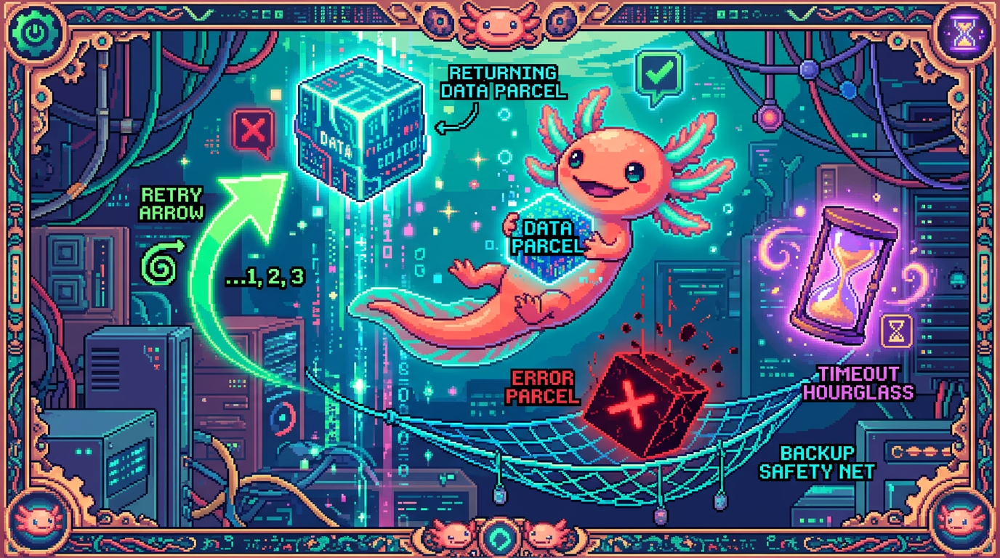

Capitulo 08 — fetch a fondo y manejo de errores

🐾 ¡Hola de nuevo! Soy Bit, tu ajolote programador. En el capítulo 06 vimos cómo viaja la información por internet (HTTP, peticiones, respuestas, códigos de estado) y en el módulo 03 ya jugaste con
fetchde manera básica. Hoy abrimos el capó del coche: vamos a entenderfetchpor dentro, a pedir cosas a una API de verdad, y —muy importante— a manejar lo que pasa cuando algo sale mal. Porque en internet, créeme, las cosas salen mal con frecuencia. Usaremos como ejemplo real el chat de IA de tunal-digital, que habla con la API de Claude. ¡Vamos!
1. Recordando: ¿qué es fetch?
Antes de profundizar, recordemos al protagonista de este capítulo.
🟦 ¿Que significa? — fetch
fetches una función que ya viene incluida en el navegador (no hay que instalar nada). Sirve para pedir datos a un servidor por internet sin recargar la página: tú le das una dirección (URL), opcionalmente le explicas cómo quieres hacer la petición, y te devuelve la respuesta. Dónde se usa en un repo real: en tunal-digital, cuando el visitante escribe un mensaje en el chat, el JavaScript del navegador usafetchpara enviar ese texto a un Cloudflare Worker, que a su vez habla con la API de Claude.
La forma más sencilla de usar fetch es darle solo una URL:
// La versión más simple: solo una URL
fetch("https://api.ejemplo.com/datos");
Pero esto se queda corto. La mayoría de las APIs necesitan que les digamos cómo queremos hablarles: con qué verbo HTTP, qué información de cabecera enviamos, y qué datos mandamos en el cuerpo. Para eso, fetch acepta un segundo argumento: un objeto de configuración. Eso es lo que veremos en la sección 2.
💡 Tip
Recuerda del capítulo 06: una petición HTTP es como enviar una carta. La URL es la dirección, el método es lo que quieres hacer (leer, crear, borrar), las cabeceras son notas en el sobre, y el cuerpo es el contenido de la carta.
fetches simplemente quien lleva la carta al correo.
2. fetch completo: method, headers y body
Veamos una llamada fetch "de verdad", parecida a la que hace tunal-digital para enviar un mensaje al chat:
fetch("https://chat.tunal-digital.workers.dev", {
method: "POST",
headers: {
"Content-Type": "application/json"
},
body: JSON.stringify({
mensaje: "Hola, ¿qué servicios ofrecen?"
})
});
Aquí pasamos un segundo argumento: un objeto con tres campos clave. Vamos uno por uno.
El method
🟦 ¿Que significa? — método HTTP
El método (o verbo) le dice al servidor qué tipo de acción queremos. Los más comunes son
GET(leer datos),POST(enviar/crear datos),PUT(reemplazar),DELETE(borrar). Sirve para que el servidor sepa tu intención. Dónde se usa: el chat de tunal-digital usaPOSTporque está enviando el mensaje del usuario al Worker. Si solofetch(url)sin método, por defecto esGET.
Los headers
🟦 ¿Que significa? — headers (cabeceras)
Los headers son pares de "etiqueta: valor" que acompañan a tu petición con información adicional sobre ella. Sirven para indicar cosas como el tipo de contenido que envías, idioma, autenticación, etc. Dónde se usa: en tunal-digital el navegador envía
Content-Type: application/jsonpara avisar "lo que mando en el cuerpo es JSON". La clave secreta de Claude NO va aquí en el navegador; eso lo veremos en la sección 7.
El body
🟦 ¿Que significa? — body (cuerpo)
El body es el contenido principal que envías en la petición: los datos en sí. Sirve para transportar la información que el servidor necesita (un formulario, un mensaje, un JSON...). Dónde se usa: en el chat, el body lleva el texto que escribió el visitante. Solo se usa con métodos como
POSToPUT; unGETnormalmente no lleva body.
JSON.stringify: del objeto al texto
Fíjate que el body no es directamente el objeto { mensaje: "..." }. Está envuelto en JSON.stringify(...). ¿Por qué?
🟦 ¿Que significa? — JSON.stringify
JSON.stringifyconvierte un objeto de JavaScript en texto con formato JSON. Sirve porque internet transporta texto, no objetos de JavaScript: hay que "aplanar" el objeto a una cadena antes de enviarlo. Dónde se usa: tunal-digital convierte{ mensaje: "..." }en el texto{"mensaje":"..."}justo antes de mandarlo en el body.
const datos = { mensaje: "Hola" };
console.log(datos); // un objeto de JavaScript
console.log(JSON.stringify(datos)); // el texto: {"mensaje":"Hola"}
⚠️ Cuidado
Si pones un objeto directamente en el body sin
JSON.stringify, JavaScript lo convierte en el texto inútil"[object Object]"y el servidor no entenderá nada. Casi siempre que elContent-Typeesapplication/json, el body debe pasar porJSON.stringify.
3. La respuesta es una Promise: async/await
Aquí viene un concepto importante. fetch no te devuelve los datos de inmediato. Pedir algo por internet toma tiempo (milisegundos, a veces segundos), y JavaScript no se queda congelado esperando. En lugar de eso, fetch te devuelve una promesa.
🟦 ¿Que significa? — Promise (promesa)
Una Promise es un objeto que representa un resultado que todavía no está listo, pero llegará (o fallará) en el futuro. Sirve para manejar tareas que tardan, como pedir datos por internet, sin congelar el programa. Dónde se usa: cada
fetchde tunal-digital devuelve una promesa que se "resuelve" cuando el Worker responde. Piensa en ella como un ticket del guardarropa: aún no tienes el abrigo, pero tienes la promesa de recogerlo.
Para trabajar con promesas de forma cómoda y legible, usamos async y await.
🟦 ¿Que significa? — async/await
asynces una palabra que pones antes de una función para avisar "esta función hace tareas que tardan". Dentro de ella puedes usarawait, que significa "espera aquí hasta que la promesa termine, y dame el resultado". Sirve para escribir código asíncrono que se lee de arriba abajo, como si fuera normal. Dónde se usa: la función que envía el mensaje del chat en tunal-digital esasync, y usaawait fetch(...)para esperar la respuesta del Worker.
Veamos la diferencia. Sin await, tienes una promesa "cruda":
const promesa = fetch("https://chat.tunal-digital.workers.dev");
console.log(promesa); // Promise { <pending> } — ¡aún no hay datos!
Con await, esperas el resultado real:
async function enviarMensaje(texto) {
// await: "espera a que llegue la respuesta antes de seguir"
const respuesta = await fetch("https://chat.tunal-digital.workers.dev", {
method: "POST",
headers: { "Content-Type": "application/json" },
body: JSON.stringify({ mensaje: texto })
});
// Aquí 'respuesta' ya es la respuesta real del servidor
const datos = await respuesta.json();
console.log(datos);
}
💡 Tip
Solo puedes usar
awaitdentro de una función marcada conasync. Si intentas usarawait"suelto" fuera de una función async, JavaScript te dará un error. Por eso casi siempre envolvemos nuestra lógica defetchen una funciónasync.
respuesta.json() también es una promesa
¿Notaste el segundo await en respuesta.json()? Leer y procesar el cuerpo de la respuesta también toma tiempo, así que también devuelve una promesa.
🟦 ¿Que significa? — JSON.parse
JSON.parsehace lo contrario deJSON.stringify: convierte un texto en formato JSON de vuelta a un objeto de JavaScript usable. Sirve para entender la respuesta del servidor (que llega como texto) como datos que puedes recorrer. Dónde se usa: el métodorespuesta.json()que usa tunal-digital internamente hace unJSON.parsepor ti para devolverte la respuesta de Claude como objeto.
const texto = '{"respuesta":"¡Hola! Ofrecemos diseño web."}';
const objeto = JSON.parse(texto);
console.log(objeto.respuesta); // "¡Hola! Ofrecemos diseño web."
4. ¿Salió bien? response.ok y response.status
Aquí hay una trampa que sorprende a casi todos los principiantes:
⚠️ Cuidado
fetchNO falla cuando el servidor responde con un error como 404 (no encontrado) o 500 (error del servidor). Parafetch, "el servidor me contestó algo" ya cuenta como éxito, aunque ese algo sea un error. Tú tienes que revisar a mano si la respuesta fue buena.
Para eso existen dos propiedades de la respuesta.
🟦 ¿Que significa? — código de estado
Un código de estado es un número de tres cifras que el servidor pone en su respuesta para resumir qué pasó. Del capítulo 06: 200 = todo bien, 400 = pediste algo mal, 401 = no autorizado, 404 = no existe, 429 = demasiadas peticiones, 500 = el servidor reventó. Sirve para saber de un vistazo el resultado. Dónde se usa: si la API de Claude responde 429 (límite de uso) al Worker de tunal-digital, ese código viaja de vuelta para que el navegador muestre un aviso amable.
🟦 ¿Que significa? — response.status
response.statuses la propiedad que contiene ese número de código de estado de la respuesta. Sirve para revisar el resultado exacto y decidir qué hacer. Dónde se usa: tunal-digital puede mirarrespuesta.statuspara distinguir entre "te pasaste del límite" (429) y "algo se rompió en el servidor" (500).🟦 ¿Que significa? — response.ok
response.okes un atajo: valetruesi el código de estado está entre 200 y 299 (es decir, "todo bien"), yfalseen cualquier otro caso. Sirve para comprobar rápido si la petición tuvo éxito sin memorizar todos los números. Dónde se usa: el chat de tunal-digital compruebaif (!respuesta.ok)antes de intentar leer la respuesta de Claude.
Así se ve la comprobación correcta:
async function enviarMensaje(texto) {
const respuesta = await fetch("https://chat.tunal-digital.workers.dev", {
method: "POST",
headers: { "Content-Type": "application/json" },
body: JSON.stringify({ mensaje: texto })
});
// ¿El servidor respondió con un código de éxito (200-299)?
if (!respuesta.ok) {
console.log("Algo salió mal. Código:", respuesta.status);
return; // no seguimos leyendo
}
const datos = await respuesta.json();
return datos.respuesta;
}
🔎 En tu codigo
En tunal-digital, distinguir entre códigos te permite dar mensajes útiles al visitante: un 429 ("Estamos recibiendo muchos mensajes, intenta en un momento") suena muy distinto a un 500 ("Hubo un problema técnico"). El mismo aviso genérico para todo confunde al usuario.
5. Dos tipos de error: de red y de API
Cuando hablamos con una API, las cosas pueden fallar de dos maneras muy distintas. Entender la diferencia es clave.
🟦 ¿Que significa? — error de red vs error de API
Un error de red es cuando la petición ni siquiera llega al servidor o no vuelve: no hay internet, el servidor está caído, el dominio no existe, o se cae la conexión. En este caso,
fetchsí lanza una excepción. Un error de API es cuando la petición sí llegó y el servidor te contestó, pero con un código de error (404, 401, 500...). Aquífetchno lanza nada; lo detectas conresponse.ok. Dónde se usa: en tunal-digital, "no hay wifi" es error de red; "Claude rechazó la clave" (401) es error de API.
Resumen rápido para que no se te olvide:
- Error de red →
fetchexplota → lo atrapas contry/catch. - Error de API →
fetchno explota → lo detectas conif (!respuesta.ok).
Necesitamos manejar ambos. Para los errores de red, usamos try/catch.
🟦 ¿Que significa? — try/catch
try/catches una estructura para capturar errores sin que el programa se rompa. Pones el código que podría fallar dentro detry { ... }, y si algo lanza un error, salta automáticamente al bloquecatch (error) { ... }, donde decides qué hacer. Sirve para que un fallo (como perder internet) no congele toda la página. Dónde se usa: el chat de tunal-digital envuelve sufetchentry/catchpara que, si se cae la conexión, muestre "No pudimos conectar" en lugar de quedarse colgado.
Juntando todo, un manejo completo se ve así:
async function enviarMensaje(texto) {
try {
const respuesta = await fetch("https://chat.tunal-digital.workers.dev", {
method: "POST",
headers: { "Content-Type": "application/json" },
body: JSON.stringify({ mensaje: texto })
});
// --- Error de API: llegó, pero el servidor dice que no ---
if (!respuesta.ok) {
if (respuesta.status === 429) {
return "Estamos recibiendo muchos mensajes. Intenta en un momento.";
}
return "Hubo un problema técnico. Intenta más tarde.";
}
const datos = await respuesta.json();
return datos.respuesta;
} catch (error) {
// --- Error de red: ni siquiera pudimos hablar con el servidor ---
console.log("Error de red:", error);
return "No pudimos conectar. Revisa tu conexión a internet.";
}
}
💡 Tip
Una buena regla mental: el
try/catchrodea todo elfetch, y dentro deltryrevisasresponse.ok. Así cubres los dos mundos: la red (catch) y la API (elif).
6. Timeouts, AbortController y reintentos (a grandes rasgos)
¿Qué pasa si el servidor no se cae... pero tarda muchísimo? El usuario se queda mirando un "cargando" eterno. Para eso existen los timeouts.
🟦 ¿Que significa? — timeout (tiempo límite)
Un timeout es un tiempo máximo que estás dispuesto a esperar una respuesta. Si se cumple y la respuesta no llegó, cancelas la petición. Sirve para no dejar al usuario esperando para siempre cuando algo va muy lento. Dónde se usa: tunal-digital podría poner un límite de, digamos, 20 segundos para la respuesta de Claude; si tarda más, avisa al visitante en vez de colgarse.
Pero fetch no tiene un botón de "cancelar" por sí solo. Para cancelarlo necesitamos una herramienta especial.
🟦 ¿Que significa? — AbortController
AbortControlleres un objeto del navegador que actúa como un interruptor de cancelación. Lo creas, le pasas susignalafetch, y cuando llamas acontroller.abort(), la petición se cancela. Sirve para poder detener unfetchque ya no quieres (porque tardó demasiado o el usuario cambió de pantalla). Dónde se usa: combinándolo con un temporizador, tunal-digital puede abortar la llamada a Claude si se pasa del tiempo límite.🟦 ¿Que significa? — signal
El
signales la "antena" que elAbortControllerle entrega afetch. Sirve para quefetchescuche la orden de cancelar: si el controller disparaabort(), lasignalavisa afetchy este se detiene, lanzando un error que puedes atrapar. Dónde se usa: se pasa como una opción más en la configuración delfetch:{ signal: controller.signal }.
Veamos un timeout con AbortController:
async function enviarConTimeout(texto, milisegundos = 20000) {
const controller = new AbortController();
// Programa la cancelación: si pasan los milisegundos, aborta
const temporizador = setTimeout(() => controller.abort(), milisegundos);
try {
const respuesta = await fetch("https://chat.tunal-digital.workers.dev", {
method: "POST",
headers: { "Content-Type": "application/json" },
body: JSON.stringify({ mensaje: texto }),
signal: controller.signal // <- aquí conectamos el interruptor
});
clearTimeout(temporizador); // llegó a tiempo: cancela el temporizador
return await respuesta.json();
} catch (error) {
clearTimeout(temporizador);
if (error.name === "AbortError") {
return "La respuesta tardó demasiado. Intenta de nuevo.";
}
return "Error de conexión.";
}
}
Reintentos y backoff
A veces un error es pasajero: una conexión que parpadeó, o un 429 momentáneo. En esos casos puede valer la pena volver a intentar.
🟦 ¿Que significa? — reintento (retry)
Un reintento es volver a hacer la misma petición automáticamente cuando falló, con la esperanza de que la segunda vez funcione. Sirve para superar fallos temporales sin molestar al usuario. Dónde se usa: si la API de Claude devuelve un 429 ocasional, tunal-digital podría reintentar una o dos veces antes de rendirse.
🟦 ¿Que significa? — backoff
Backoff es la idea de esperar cada vez más entre reintentos: primero 1 segundo, luego 2, luego 4... Sirve para no bombardear a un servidor que ya está saturado (lo cual empeoraría las cosas). Dónde se usa: un reintento educado ante un 429 espera un poco más en cada intento, dándole aire al servidor.
async function enviarConReintentos(texto, intentos = 3) {
for (let i = 0; i < intentos; i++) {
try {
const respuesta = await fetch("https://chat.tunal-digital.workers.dev", {
method: "POST",
headers: { "Content-Type": "application/json" },
body: JSON.stringify({ mensaje: texto })
});
if (respuesta.ok) {
return await respuesta.json(); // ¡éxito!
}
// si no fue ok, caemos abajo y reintentamos (si quedan intentos)
} catch (error) {
// error de red: también reintentamos
}
// backoff: esperar más en cada vuelta (1s, 2s, 4s...)
const espera = 1000 * Math.pow(2, i);
await new Promise(r => setTimeout(r, espera));
}
return "No pudimos obtener respuesta tras varios intentos.";
}
⚠️ Cuidado
No reintentes todo. Un error 400 ("pediste mal") o 401 ("clave inválida") no se arregla repitiendo: vas a fallar igual y desperdiciar recursos. Los reintentos tienen sentido sobre todo para errores de red y para 429/500 (cosas temporales).
7. El patrón real de tunal-digital: navegador → Worker → Claude
Ahora la pieza más importante de todo el capítulo. Quizá te preguntes: "Bit, si quiero hablar con la API de Claude, ¿por qué no hago fetch directo a la API desde el navegador?" La respuesta es una sola palabra: seguridad.
Para usar la API de Claude necesitas una clave secreta (una API key). Esa clave es como la contraseña de tu cuenta: quien la tenga puede gastar tu dinero. Y aquí está el problema:
⚠️ Cuidado
TODO el código JavaScript que corre en el navegador es visible para cualquiera. Basta con abrir las herramientas de desarrollador (F12) para leerlo. Si pones tu clave de Claude en el JavaScript del navegador, la estás regalando al mundo entero. Cualquiera podría copiarla y gastar tu cuota.
Por eso tunal-digital usa un intermediario en el servidor: un Cloudflare Worker. El flujo es:
[Navegador del visitante]
| fetch (POST con el mensaje, SIN clave)
v
[Cloudflare Worker] <-- aquí vive la clave secreta, oculta
| fetch a la API de Claude (CON la clave en los headers)
v
[API de Claude / Anthropic]
| respuesta
v
[Worker] --> [Navegador] (le devuelve solo el texto de la respuesta)
El navegador nunca ve la clave. El Worker la guarda en una variable de entorno secreta (en Cloudflare), la añade a los headers de su fetch hacia Claude, recibe la respuesta y le pasa al navegador solo lo necesario.
Así se ve, simplificado, el fetch que hace el Worker (este código corre en el servidor, no en el navegador):
// ESTO CORRE EN EL CLOUDFLARE WORKER (servidor), no en el navegador
async function llamarAClaude(mensajeDelUsuario, env) {
const respuesta = await fetch("https://api.anthropic.com/v1/messages", {
method: "POST",
headers: {
"Content-Type": "application/json",
// La clave vive SOLO aquí, en el servidor, leída de una variable secreta:
"x-api-key": env.ANTHROPIC_API_KEY,
"anthropic-version": "2023-06-01"
},
body: JSON.stringify({
model: "claude-sonnet-4-5",
max_tokens: 1024,
messages: [{ role: "user", content: mensajeDelUsuario }]
})
});
const datos = await respuesta.json();
return datos; // el Worker decide qué parte devolver al navegador
}
🔎 En tu codigo
Fíjate en la simetría: el navegador hace
fetchal Worker, y el Worker hace otrofetcha Claude. Es la misma herramienta (fetch) en dos lugares distintos. La diferencia crucial es dónde está la clave: solo en el segundofetch, el que corre en el servidor. Esta misma filosofía la usa Faro/Organizer: las claves de OpenAI viven en el servidor de Next.js, nunca en el cliente.💡 Tip
Regla de oro para todo el módulo: las claves secretas nunca tocan el navegador. Si una API necesita una clave, pon un pequeño servidor (un Worker, una función serverless, una ruta de API) en medio que la guarde. El navegador habla con tu servidor; tu servidor habla con la API.
8. Poniéndolo todo junto
Mira cómo encaja la pieza del navegador con todo lo aprendido. Este es el código del lado del cliente de tunal-digital, con manejo de errores incluido:
async function enviarMensajeAlChat(texto) {
const controller = new AbortController();
const temporizador = setTimeout(() => controller.abort(), 20000);
try {
const respuesta = await fetch("https://chat.tunal-digital.workers.dev", {
method: "POST",
headers: { "Content-Type": "application/json" },
body: JSON.stringify({ mensaje: texto }),
signal: controller.signal
});
clearTimeout(temporizador);
// Error de API
if (!respuesta.ok) {
if (respuesta.status === 429) {
return "Muchos mensajes ahora mismo. Intenta en un momento.";
}
return "Hubo un problema técnico. Intenta más tarde.";
}
const datos = await respuesta.json();
return datos.respuesta;
} catch (error) {
clearTimeout(temporizador);
// Error de red o timeout
if (error.name === "AbortError") {
return "La respuesta tardó demasiado.";
}
return "No pudimos conectar. Revisa tu internet.";
}
}
Si entiendes este bloque línea por línea, ya dominas lo esencial de este capítulo. Tiene: fetch completo (method, headers, body con JSON.stringify), async/await, comprobación de response.ok y response.status, manejo separado de errores de API y de red, y un timeout con AbortController y signal. ¡Todo lo de hoy en una sola función!
🐾 Bit dice: no memorices el código, memoriza las preguntas. Ante cada
fetchpregúntate: ¿qué método? ¿qué headers? ¿hay body (y lo paso porJSON.stringify)? ¿reviséresponse.ok? ¿qué hago si falla la red? ¿dónde está la clave secreta (ojalá NO en el navegador)? Si respondes esas seis, estás listo.
✅ Checklist — ¿ya domino esto?
- [ ] Sé que
fetchrecibe una URL y, opcionalmente, un objeto conmethod,headersybody. - [ ] Entiendo que el
bodycon JSON debe pasar porJSON.stringifyantes de enviarse. - [ ] Sé que
fetchdevuelve una Promise y que usoasync/awaitpara esperar la respuesta. - [ ] Entiendo que
respuesta.json()también devuelve una promesa (por eso lleva su propioawait). - [ ] Reviso
response.okyresponse.statuspara saber si la petición tuvo éxito. - [ ] Sé que
fetchno lanza error en un 404 o 500; eso lo detecto yo conresponse.ok. - [ ] Distingo un error de red (se atrapa con
try/catch) de un error de API (se detecta conif (!respuesta.ok)). - [ ] Conozco la idea de timeout y sé que se implementa con
AbortControllery susignal. - [ ] Entiendo qué son los reintentos y el backoff, y cuándo NO conviene reintentar.
- [ ] Tengo grabado que las claves secretas viven en el servidor (el Worker), jamás en el navegador.
- [ ] Puedo explicar el flujo navegador → Cloudflare Worker → API de Claude de tunal-digital.
🧪 Ejercicios
-
(en papel) Dibuja el flujo de un mensaje del chat de tunal-digital desde que el visitante presiona "Enviar" hasta que ve la respuesta. Marca con un círculo el único lugar donde aparece la clave secreta de Claude. Explica con tus palabras por qué no puede ir en el navegador.
-
(en papel) Para cada situación, escribe si es error de red o error de API, y cómo lo detectarías (
try/catchoresponse.ok): - El usuario se quedó sin wifi. - La API responde 401 porque la clave es inválida. - La API responde 429 por demasiadas peticiones. - El dominio del Worker está mal escrito y no existe. -
💻 Escribe una función
asyncllamadapedirChiste()que hagafetchahttps://api.chucknorris.io/jokes/random, reviseresponse.ok, y si todo va bien imprima en consola el campovaluede la respuesta. Si no, imprime elstatus. Envuélvelo entry/catch. -
💻 Toma la función del ejercicio 3 y añádele un timeout de 5 segundos usando
AbortControllerysignal. Si la petición se aborta, imprime "Tardó demasiado". Pista: revisaerror.name === "AbortError"en elcatch. -
💻 Crea una función
enviarDatos(objeto)que haga unPOSTa una URL de prueba (puedes usarhttps://httpbin.org/post), enviandoobjetoen el body conJSON.stringifyy el headerContent-Type: application/json. Imprime la respuesta conrespuesta.json(). Comprueba en la respuesta de httpbin que tus datos llegaron tal cual. -
💻 (reto) Implementa una función
fetchConReintentos(url, intentos)con backoff: si falla (red oresponse.okfalso), espera 1s, luego 2s, luego 4s antes de reintentar, hasta agotar losintentos. NO reintentes si elstatuses 400 o 401 (esos no se arreglan repitiendo). Devuelve los datos si tiene éxito o un mensaje de fallo si no.
🐾 ¡Lo lograste! Ahora
fetchya no es una caja negra: sabes pedir bien, esperar conasync/await, distinguir los fallos de red de los de la API, cancelar lo que tarda demasiado y, sobre todo, proteger tus claves poniéndolas en el servidor. En el próximo capítulo seguiremos construyendo sobre esto. Nos vemos. — Bit 🪶